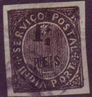
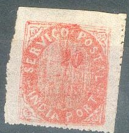
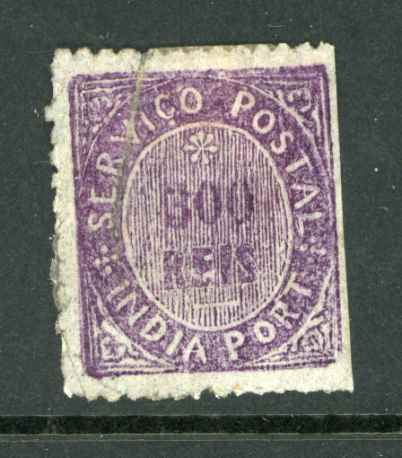
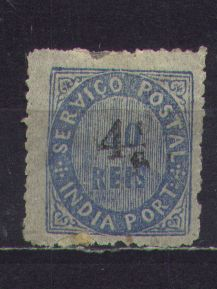
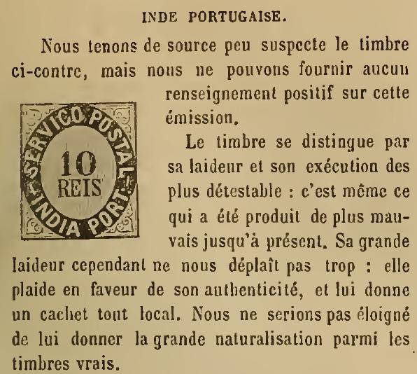
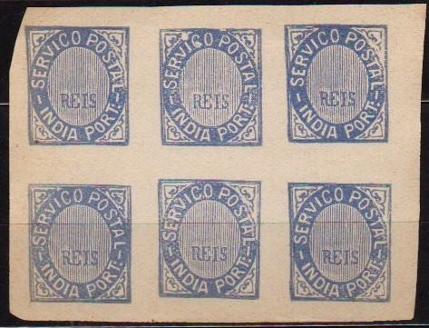

India Portugueza
Return To Catalogue - Crown issue - 1886-1913 - 1914 onwards and miscellaneous - Portugal
Note: on my website many of the
pictures can not be seen! They are of course present in the
catalogue;
contact me if you want to purchase the catalogue.
Currency: 1000 Reis = 1 Milreis, from 1882 on: 12 Reis = 1 Tanga, 16 Tanga = 1 Rupie








(Reduced sizes)
1 1/2 r black (1883) 4 1/2 r olive (1883) 6 r green (1883) 10 r black 15 r red (1875) 20 r red 40 r blue 100 r green 200 r yellow 300 r lilac 600 r lilac 900 r lilac
For the specialist:
The values 10 r, 15, 20, 40, 100, 200, 300, 600 and 900 r exist
in several types:
1) with a star above the value and normal "SERVICO"
2) with "S" and "R" smaller than the other
letters of "SERVICO" (no star above value), the 15 r
does not exist in this type
3) with normal letters in "SERVICO" and no star above
value.
The values 1 1/2 r, 4 1/2 r and 6 r were only issued in 1883.
Surcharged


(1 1/2 on 20 r reduced size)
'1 1/2' on 10 r black '1 1/2' on 20 r red '4 1/2' on 40 r blue '4 1/2' on 100 r green '5' (red) on 10 r black '5' on 15 r red '5' on 20 r red '5' on 100 r green '6' on 100 r green '6' on 200 r yellow
These stamps exist with various perforations and printed on yellowish or bluish paper.
Value of the stamps |
|||
vc = very common c = common * = not so common ** = uncommon |
*** = very uncommon R = rare RR = very rare RRR = extremely rare |
||
| Value | Unused | Used | Remarks |
Large value numbers, 33 lines in the background, "S" and "R" of "SERVICO" small |
|||
| 10 r | RR | RR | |
| 20 r | *** | *** | |
| 40 r | RRR | RRR | |
| 100 r | RRR | RRR | |
| 200 r | RRR | RRR | |
| 300 r | RR | RR | |
| 600 r | RR | RR | |
| 900 r | RR | RR | |
Large value
numbers, 44 lines in the background, "S" and
"R" of "SERVICO" same size, |
|||
| 10 r | *** | *** | |
| 20 r | *** | *** | |
| 40 r | *** | *** | |
| 100 r | R | R | |
| 200 r | RR | RR | |
| 300 r | RR | RR | |
| 600 r | RR | RR | |
| 900 r | RR | RR | |
| Small value numbers, type I: "REIS" small, "V" of "SERVICO" is an inverted "A" | |||
| 10 r | *** | *** | With normal 'V': *** |
| 20 r | *** | *** | With normal 'V': RR |
| Small value numbers, type I: "REIS" larger | |||
| 10 r | ** | ** | Exists with the inverted 'A' variety |
| 15 r | ** | *** | Exists with the inverted 'A' variety |
| 20 r | *** | *** | Exists with the inverted 'A' variety |
| 40 r | *** | *** | |
| 100 r | R | R | |
| 200 r | RRR | RRR | |
| 300 r | RRR | RRR | |
| 600 r | RRR | RRR | |
| 900 r | RRR | RRR | |
With star above the value |
|||
| 1 1/2 r | * | * | Two subtypes: 'REIS' different, 'REIS' fat: *** |
| 4 1/2 r | *** | *** | |
| 6 r | ** | ** | Two subtypes: 'REIS' different, 'REIS' fat: *** |
| 10 r | *** | *** | Two subtypes: 'REIS' different |
| 15 r | *** | *** | |
| 20 r | *** | *** | |
| 40 r | *** | *** | |
| 100 r | R | R | |
| 200 r | R | R | |
| 300 r | R | R | |
| 600 r | R | R | |
| 900 r | RR | RR | |
Surcharged |
|||
| 1 1/2 r on 10 r | RRR | RRR | Surcharge exists on 3 different types of stamps |
| 1 1/2 r on 20 r | RR | RR | Surcharge exists on 4 different types of stamps |
| 4 1/2 r on 40 r | *** | *** | Surcharge exists on 3 different types of stamps, some of them: RRR |
| 4 1/2 r on 100 r | R | R | Surcharge exists on 3 different types of stamps, some of them: RRR |
| 5 on 10 r | ** | *** | Surcharge exists on 6 different types of stamps; ** to RR |
| 5 on 15 r | * | * | |
| 5 on 20 r | * | * | Surcharge exists on 3 different types of stamps |
| 6 on 100 r | RRR | RRR | |
| 6 on 200 r | RRR | RRR | |

Bar-cancels with number or letter in the center.
Examples:


Other forgery:

The above stamp is also a forgery, however, I don't know how to distinguish this forgery. Album Weeds says there should be a small dot just below the 'C' of 'SERVICO', which this stamp doesn't have. If I'm not mistkane this is one of the forgeries described at http://www.portugal.tabacaria.com.pt/Nativos/falso04.htm; The size of the stamp is too small and the letters are different.
'Le Timbre Poste' by Moens of May 1876 No 161, page 37 mentions some forgeries made by E.Treibmann of Dresden (2 different types). I have not been able to find any further information about these forgeries or this forger. I do not know if these forgeries are one of the above.
For stamps of Portuguese India in the Crown design, click here.
A very nice pdf document can be found at: http://www.caleida.pt/filatelia/fp/ebook/bfd001_p.pdf written by Joaquim Leote (in Portuguese); this award winning document describes the postal history of Portuguese India from pre-philatelic to the first issues. Another document can be found at: http://www.filatelicamente.online.pt/l001/l001_06i.html (same author).
Stanley Gibbons Portuguese India 1998 Reprint of their 1893 catalog, 87 pages. Detailed description of the first issue (I haven't seen this book myself).

{kind=link}